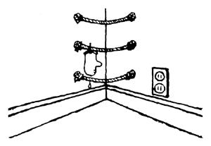
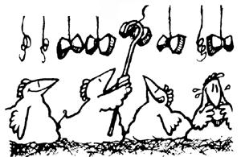
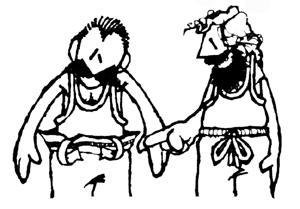

Most store-bought survival kits are too cumbersome to carry along comfortably on outdoor ventures . . . but David Brock of Pleasant Grove, Alabama bases his own lightweight, pocket sized kit on a container that most of us just throw away: the 35mm film holder!
Inside the waterproof case David fits one compass, one Band-Aid, one aspirin tablet, one tube of antiseptic, one bouillon cube, five matches, one razor blade, a fish line, a hook, a lead sinker, and a small snare wire. "Make up several kits," says David, "one for your tackle box, one for your backpack, one for your boat, one for your car, and best and most Important of all . . . one for your pocket!"
Sounds like a lifesaver, David!
Are you tired of being left with just one wet winter glove to a pair, each time you come !n from an outing? If so, Carole M. Wooden of Spencer, Tennessee suggests making a "ropeladder clothesline". Just find a free comer (or any two supports a reasonable distance apart) . . . and drive one nail into the wall about a foot and a half to the left of the comer's seam and another nail directly across from !t about a foot and a half to the right (shorten or lengthen the distance according to the length of clothesline you wish to use). Then tie a piece of rope or string from one nail to the other, and repeat the process ail the way down the wall (leaving 10-12 inches vertically between strings) to accommodate as many pairs of gloves as you wish to hang.
If you position your miniature clotheslines according to the heights of your family members, even the smallest will be able to hang up his or her gloves upon entering. Just clothespin your water-laden hand warmers to the string as you come in from the cold . . . and you'll have a matched pair of dry gloves ready and waiting the next time you depart.
And don't be too quick to take down your contraption when the warm months of spring roll around, says Carole ... because work gloves, sun hats, and a wide variety of much-used, often-mislaid items can be clipped to your string ladder as well!
Thanks for the tip, Carole!
Like most folks, Hyla G. Moore of Phoenix, Arizona has felt the bite of today's supermarket prices. But unlike many, Hyla has found a way to soothe the sting, with an Idea that cuts down on the use of both dish detergent and garbage containers ... and provides, as well, approximately six free meal entrees a week: The secret is a concoction called "Transfer Soup".
"My soup," says Hyla, "is started with the water from a cooked vegetable or the broth from a boiled meat ... and from there It's simply a matter of transfer from one pot to another." Just take your starting liquid, Hyla tells us, and pour it into a recently emptied hot-cereal pot,
scrambled-egg pan, or other such receptacle with a trace of food left in it. Let the liquid soak while you eat your meal, transfer it back to your soup kettle, and refrigerate the mixture till the next time the opportunity arises to soak up the remains of an emptied milk container, food can, or what have you.
Pour any excess fat from cooked meat into your pot so that the soup can absorb all its good meat flavor. Add leftover vegetables, meat, or crust. And before you know it, you'll have a soup so delicious that-like Hyla--you just may find people inviting themselves over to "dip !n and enjoy". (And if guests begin arriving before the dish is quite ready, just add a bouillon cube for more meat flavor, a bit of pasta for thickening, or some milk, croutons, or pureed vegetables for a fancy touch.)
"All the food I prepare is good food," says Hyla, "so why throw any of It away? Transfer Soup is different every time I make It . . . but the result is Invariably downright delicious!"
Bill and Betty Cook of Boss, Missouri have come up with a constructive Idea for using that nonbiodegradable styrofoam packaging which we all pay for. Bill and Betty report that the often wasted meat trays and styrofoam egg cartons we accumulate are great for Insulating chicken houses, doghouses, and the like. "Just staple the styrofoam along the interior of the animals' structure," they tell us, "and your homestead critters will keep cooler In the summer and warmer during the winter!"
And If that doesn't keep your feathered friends comfy, Kathleen Gordinter has several tricks of her own which she uses to keep her chickens healthy and laying throughout Wal worth, New York's cold winters.
First, Kathleen makes sure that her poultry get plenty of light .. . at least 14 hours every day. Just before sunset, she turns on the over head bulb in the barn and leaves it burning for several hours ... thus extending the winter's shortened span of daylight for her barnyard crit ten.
Meantime, Kathleen gives her homestead fowl hot water twice a day . . . In both the morning and the evening. This way the water Is pre. vented from freezing so that her chickens never have to "go without". . . and the practice seems to protect them, as well, from the pain of frost bitten combs. In addition, Kathleen mixes a quarter cup of homemade apple cider vinegar into each gallon of her poultry's Hz0: This added acid, she believes, Is an aid to the chickens' chemical balance.
Ms. Gordinier also makes a point of feeding her feathered friends the "greens" they can't forage for in the winter . . . In the form of fruit and vegetable scraps added to their regular feed. Moreover, the chickens are allowed to wander In and out of the barn (except during blizzards, of course) . . . giving them plenty of opportunity to scratch.
And just in case that's not enough exercise for the birds, Kathleen ties a few pieces of stale bread together with a string and hangs it just above the cacklers' heads . . . a trick, she says, "that's sure to keep 'em jumping". "And," says Kathleen, "it must all be working . . . 'cause in all the time that we've had homestead fowl, we've never lost a chicken or had to go without 0995!"
Even after you bundle up in coat, hat, scarf, gloves, and boots . . . the winter's snow always seems to locate the most vulnerable inlet to the skin: sleeves! But up in Columbiaville, Michigan-where the winters can get mighty bitter Carl McGinnis leaves his house prepared when he goes off to chop wood and the like during the cold weather months: Carl takes an old pair of socks and cuts five finger holes In the toe end of each. Then he pulls the sock onto his hand and up his arm as far as it will go, pokes his fingers through the openings ... and dons his coat and gloves. What a great way to keep out the cold, Carl . . . our warmest thanks to you!
Plenty of us need to take our belts In a notch these inflationary days, but pokin' those extra holes with an ice pick makes kind of a ragged job of the whole Idea. You can do neater work on leather by concocting a punch from an empty brass cartridge, says Brad Pendergraft of Gunnison, Colorado. (If you're not a hunter or a skeet shooter, maybe your gun-totin' friends will save you some of their used ammunition casings.) Just pick out a spent shelf that has an opening the right size and use a file to sharpen its edges. Then spread your cowhide or pigskin -or naughty--on a block of wood, position your new cutter, sharp-side down, where you want to make the hole, and give the base of the cartridge a couple of good raps with a hammer.
If you're short of storage space, Brenda Neal of Tolima, Colombia, South America suggests this substitute for a closet or chest of drawers: Keep your clothes, towels, or whatever suspended in baskets hung from the ceiling with macrame hangers. Great for a child's room!
A blazing flame in the fireplace or hearth Is e heavenly thing in the midst of a cold winter's day or night . .. but to start the fire buming--while shivering In one's shoes-always seems to take forever. "Nonetheless," says Mrs. Stan Ellis of Brownstown, Illinois, "there Is a solution to this chilling problem, which takes only a little preparation beforehand. My husband and I make `Instant fire starters' and then put them aside until needed." Here's how It's done:
First drag out your muffin tins and fit each cup with a paper liner. Then melt down a batch of paraffin In a doubleboiler and mix enough sawdust into the liquid wax so that the blend Is thick enough to spoon Into the paper-lined tins. Press the mixture down and let !t cool until it's solid . . . and you'll be ready to start up a flame "quick as a wink" in the lowest of temperatures that winter has to offer.
The next time you come in frostbitten from wind and snow or awaken in the middle of the night shivering in your fire's fading glow, just toss a "paraffin muffin"-paper and all on your fireplace grate or your hearth's dying coals . . . add some kindling wood . . . give it all a light
. . and in no time flat you'll have a roaring flame that'll keep you warm and toasty.
Or . . . you can light the same tire with recycled corncobs, report James and Billie Harper of Clinton, Kentucky. Pour about two Inches of kerosene Into an empty three-pound coffee or shortening can, stand five to six cobs in the tin, and let the whole thing sit for several hours. (Always handle kerosene with extreme care, James and Billie wisely warn . . . and keep this
highly flammable substance far from the reach of children.)
In the few short hours that your ears of corn sit steeping, they'll absorb a considerable amount of fuel . . . and, once they do, your flame starters will be ready for use. Just put one petroleum-laden corncob on the bottom of your hearth or fireplace, top with small sticks, then larger chunks of firewood . . . and touch a match to the saturated ear of corn. The cob will bum briskly for several minutes . . . plenty of time--you'll find-for your fire to perk up and get going hot and strong!
"Here's a good way to get more wear out of those winter long johns with the worn-out elastic waistband," write Michael and Luisa Tschetter of Rocheport, Missouri. "Just turn down the old elastic and stitch it to the garment to form a 112-inch casing. Leave a small opening in front
Then run a drawstring through the casing and you're all set for a few more years of warmth. It beats us why they don't make 'em that way in the first place!"
Out in Grants Pass, Oregon, Bruce W. Lytle has been using what he calls a "quickie dustpan" for over 50 years now. Whenever Bruce gets to feeling as if his house could use a good sweeping, he gathers together [t) his broom, [2] an old piece of newsprint, wrapping paper, or other such parchment, and [3] some masking or Scotch tape. Then after some brisk whisks of the sweeper-Bruce tapes the paper to the floor near his amassed pile of dust and brushes the dirt right over the adhesive strip and onto his improvised dustpan. Finally, he lifts up the tape, wads the whole shebang Into a ball, and disposes of the accumulated debris.
It couldn't be easier! "Get the most from your candles," say Lt. Col. and Mrs. Glenn Pribus of Springfield, Virginia. "They save electricity . . . and are wonderfully romantic as well." For maximum brightness, Mr. and Mrs. Pribus tell us, put short candle stubs In tall holders ... or place lighted candles opposite one or more mirrors.
Another tip: If you have hordes of tapers but no candlesticks of corresponding size ... Immerse each candle's wickless bottom end in a container of boiling water and wait several minutes . . . then reshape each base to fit Its holder.
And when you've put all these Ideas to good use and are left In the end with a vast supply of small candle stubs, use the wax to ease sticky drawers and balky zippers .. . or better yet melt down the leftovers, mix colors together, experiment with shapes and sizes, and before you know it, you'll be decorating your house with a brand new set of imaginative, energy-efficient light makers!
OK. Now it's YOUR turn! We've all come up with some practical, down-home, time-tested solutions to the frustrating little problems that bug us every day. Let's hear YOUR best "horse sense" ideas so we can share'em and all benefit.
Send your pointers to Down-Home Country Lore, P.O. Box 70, Hendersonville, North Carolina 28739, and I'll make sure that the most useful of the suggestions will appear in upcoming editions. A one-year subscription-or a oneyear extension of an existing subscription-will then be sent to each contributor whose tip does get printed in this column. - MOTHER
|
 |
 |
 |